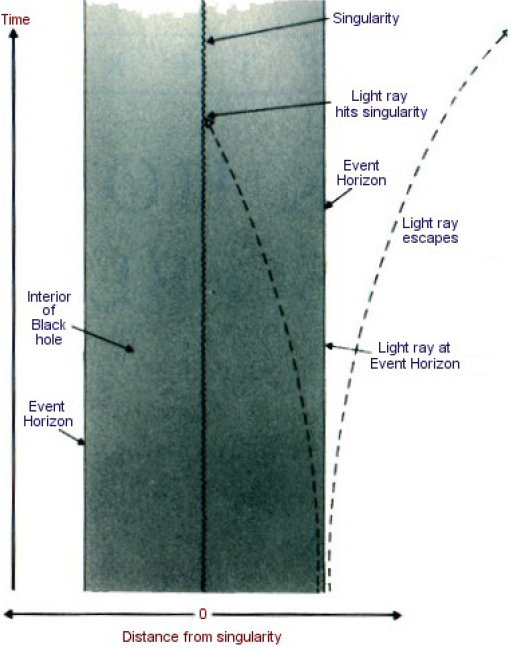

CHAPTER 7 BLACK HOLES AIN’T SO BLACK
第七章 黑洞不是这么黑的
Before 1970, my research on general relativity had concentrated mainly on the question of whether or not there had been a big bang singularity. However, one evening in November that year, shortly after the birth of my daughter, Lucy, I started to think about black holes as I was getting into bed. My disability makes this rather a slow process, so I had plenty of time. At that date there was no precise definition of which points in space-time lay inside a black hole and which lay outside. I had already discussed with Roger Penrose the idea of defining a black hole as the set of events from which it was not possible to escape to a large distance, which is now the generally accepted definition. It means that the boundary of the black hole, the event horizon, is formed by the light rays that just fail to escape from the black hole, hovering forever just on the edge Figure 7:1. It is a bit like running away from the police and just managing to keep one step ahead but not being able to get clear away!
在1970年以前，我关于广义相对论的研究，主要集中于是否存在一个大爆炸奇点。然而，同年11月我的女儿露西出生后不久的一个晚上，当我上床时，我开始思考黑洞的问题。我的残废使得这个过程相当慢，所以我有许多时间。那时候还不存在关于空间——时间的那一点是在黑洞之内还是在黑洞之外的准确定义。我已经和罗杰·彭罗斯讨论过将黑洞定义为不能逃逸到远处的事件集合的想法，这也就是现在被广泛接受的定义。它意味着，黑洞边界——即事件视界——是由刚好不能从黑洞逃逸而永远只在边缘上徘徊的光线在空间——时间里的路径所形成的（图7.1）。这有点像从警察那儿逃开，但是仅仅只能比警察快一步，而不能彻底地逃脱的情景！
Suddenly I realized that the paths of these light rays could never approach one another. If they did they must eventually run into one another. It would be like meeting someone else running away from the police in the opposite direction – you would both be caught! (Or, in this case, fall into a black hole.) But if these light rays were swallowed up by the black hole, then they could not have been on the boundary of the black hole. So the paths of light rays in the event horizon had always to be moving parallel to, or away from, each other. Another way of seeing this is that the event horizon, the boundary of the black hole, is like the edge of a shadow – the shadow of impending doom. If you look at the shadow cast by a source at a great distance, such as the sun, you will see that the rays of light in the edge are not approaching each other.
我忽然意识到，这些光线的路径永远不可能互相靠近。如果它们靠近了，它们最终就必须互相撞上。这正如和另一个从对面逃离警察的人相遇——你们俩都会被抓住：（或者，在这种情形下落到黑洞中去。）但是，如果这些光线被黑洞所吞没，那它们就不可能在黑洞的边界上呆过。所以在事件视界上的光线的路径必须永远是互相平行运动或互相散开。另一种看到这一点的方法是，事件视界，亦即黑洞边界，正像一个影子的边缘——一个即将临头的灾难的影子。如果你看到在远距离上的一个源（譬如太阳）投下的影子，就能明白边缘上的光线不会互相靠近。
If the rays of light that form the event horizon, the boundary of the black hole, can never approach each other, the area of the event horizon might stay the same or increase with time, but it could never decrease because that would mean that at least some of the rays of light in the boundary would have to be approaching each other. In fact, the area would increase whenever matter or radiation fell into the black hole Figure 7:2.
如果从事件视界（亦即黑洞边界）来的光线永远不可能互相靠近，则事件视界的面积可以保持不变或者随时间增大，但它永远不会减小——因为这意味着至少一些在边界上的光线必须互相靠近。事实上，只要物质或辐射落到黑洞中去，这面积就会增大（图7.2）；

Or if two black holes collided and merged together to form a single black hole, the area of the event horizon of the final black hole would be greater than or equal to the sum of the areas of the event horizons of the original black holes Figure 7:3. This nondecreasing property of the event horizon’s area placed an important restriction on the possible behavior of black holes. I was so excited with my discovery that I did not get much sleep that night. The next day I rang up Roger Penrose. He agreed with me. I think, in fact, that he had been aware of this property of the area. However, he had been using a slightly different definition of a black hole. He had not realized that the boundaries of the black hole according to the two definitions would be the same, and hence so would their areas, provided the black hole had settled down to a state in which it was not changing with time.
或者如果两个黑洞碰撞并合并成一个单独的黑洞，这最后的黑洞的事件视界面积就会大于或等于原先黑洞的事件视界面积的总和（图7.3）。事件视界面积的非减性质给黑洞的可能行为加上了重要的限制。我如此地为我的发现所激动，以至于当夜没睡多少。第二天，我给罗杰·彭罗斯打电话，他同意我的结果。我想，事实上他已经知道了这个面积的性质。然而，他是用稍微不同的黑洞定义。他没有意识到，假定黑洞已终止于不随时间变化的状态，按照这两种定义，黑洞的边界以及其面积都应是一样的。
The nondecreasing behavior of a black hole’s area was very reminiscent of the behavior of a physical quantity called entropy, which measures the degree of disorder of a system. It is a matter of common experience that disorder will tend to increase if things are left to themselves. (One has only to stop making repairs around the house to see that!) One can create order out of disorder (for example, one can paint the house), but that requires expenditure of effort or energy and so decreases the amount of ordered energy available.
人们非常容易从黑洞面积的不减行为联想起被叫做熵的物理量的行为。熵是测量一个系统的无序的程度。常识告诉我们，如果不进行外加干涉，事物总是倾向于增加它的无序度。（例如你只要停止保养房子，看会发生什么？）人们可以从无序中创造出有序来（例如你可以油漆房子），但是必须消耗精力或能量，因而减少了可得到的有序能量的数量。
A precise statement of this idea is known as the second law of thermodynamics. It states that the entropy of an isolated system always increases, and that when two systems are joined together, the entropy of the combined system is greater than the sum of the entropies of the individual systems. For example, consider a system of gas molecules in a box. The molecules can be thought of as little billiard balls continually colliding with each other and bouncing off the walls of the box. The higher the temperature of the gas, the faster the molecules move, and so the more frequently and harder they collide with the walls of the box and the greater the outward pressure they exert on the walls. Suppose that initially the molecules are all confined to the left-hand side of the box by a partition. If the partition is then removed, the molecules will tend to spread out and occupy both halves of the box. At some later time they could, by chance, all be in the right half or back in the left half, but it is overwhelmingly more probable that there will be roughly equal numbers in the two halves. Such a state is less ordered, or more disordered, than the original state in which all the molecules were in one half. One therefore says that the entropy of the gas has gone up. Similarly, suppose one starts with two boxes, one containing oxygen molecules and the other containing nitrogen molecules. If one joins the boxes together and removes the intervening wall, the oxygen and the nitrogen molecules will start to mix. At a later time the most probable state would be a fairly uniform mixture of oxygen and nitrogen molecules throughout the two boxes. This state would be less ordered, and hence have more entropy, than the initial state of two separate boxes.
热力学第二定律是这个观念的一个准确描述。它陈述道：一个孤立系统的熵总是增加的，并且将两个系统连接在一起时，其合并系统的熵大于所有单独系统熵的总和。譬如，考虑一盒气体分子的系统。分子可以认为是不断互相碰撞并不断从盒子壁反弹回来的康乐球。气体的温度越高，分子运动得越快，这样它们撞击盒壁越频繁越厉害，而且它们作用到壁上的向外的压力越大。假定初始时所有分子被一隔板限制在盒子的左半部，如果接着将隔板除去，这些分子将散开并充满整个盒子。在以后的某一时刻，所有这些分子偶尔会都呆在右半部或回到左半部，但占绝对优势的可能性是在左右两半分子的数目大致相同。这种状态比原先分子在左半部分的状态更加无序，所以人们说熵增加了。类似地，我们将一个充满氧分子的盒子和另一个充满氮分子的盒子连在一起并除去中间的壁，则氧分子和氮分子就开始混合。在后来的时刻，最可能的状态是两个盒子都充满了相当均匀的氧分子和氮分子的混合物。这种状态比原先分开的两盒的初始状态更无序，即具有更大的熵。
The second law of thermodynamics has a rather different status than that of other laws of science, such as Newton's law of gravity, for example, because it does not hold always, just in the vast majority of cases. The probability of all the gas molecules in our first box found in one half of the box at a later time is many millions of millions to one, but it can happen. However, if one has a black hole around there seems to be a rather easier way of violating the second law: just throw some matter with a lot of entropy such as a box of gas, down the black hole. The total entropy of matter outside the black hole would go down. One could, of course, still say that the total entropy, including the entropy inside the black hole, has not gone down - but since there is no way to look inside the black hole, we cannot see how much entropy the matter inside it has. It would be nice, then, if there was some feature of the black hole by which observers outside the black hole could tell its entropy, and which would increase whenever matter carrying entropy fell into the black hole. Following the discovery, described above, that the area of the event horizon increased whenever matter fell into a black hole, a research student at Princeton named Jacob Bekenstein suggested that the area of the event horizon was a measure of the entropy of the black hole. As matter carrying entropy fell into a black hole, the area of its event horizon would go up, so that the sum of the entropy of matter outside black holes and the area of the horizons would never go down.
和其他科学定律，譬如牛顿引力定律相比，热力学定律的状况相当不同，例如，它只是在绝大多数的而非所有情形下成立。在以后某一时刻，所有我们第一个盒子中的气体分子在盒子的一半被发现的概率只有几万亿分之一，但它们可能发生。但是，如果附近有一黑洞，看来存在一种非常容易的方法违反第二定律：只要将一些具有大量熵的物体，譬如一盒气体扔进黑洞里。黑洞外物体的总熵就会减少。当然，人们仍然可以说包括黑洞里的熵的总熵没有降低——但是由于没有办法看到黑洞里面，我们不能知道里面物体的熵为多少。如果黑洞具有某一特征，黑洞外的观察者因之可知道它的熵，并且只要携带熵的物体一落入黑洞，它就会增加，那将是很美妙的。紧接着上述的黑洞面积定理的发现（即只要物体落入黑洞，它的事件视界面积就会增加），普林斯顿一位名叫雅可布·柏肯斯坦的研究生提出，事件视界的面积即是黑洞熵的量度。由于携带熵的物质落到黑洞中去，它的事件视界的面积就会增加，这样黑洞外物质的熵和事件视界面积的和就永远不会降低。
This suggestion seemed to prevent the second law of thermodynamics from being violated in most situations. However, there was one fatal flaw. If a black hole has entropy, then it ought to also have a temperature. But a body with a particular temperature must emit radiation at a certain rate. It is a matter of common experience that if one heats up a poker in a fire it glows red hot and emits radiation, but bodies at lower temperatures emit radiation too; one just does not normally notice it because the amount is fairly small. This radiation is required in order to prevent violation of the second law. So black holes ought to emit radiation. But by their very definition, black holes are objects that are not supposed to emit anything. It therefore seemed that the area of the event horizon of a black hole could not be regarded as its entropy. In 1972 I wrote a paper with Brandon Carter and an American colleague, Jim Bardeen, in which we pointed out that although there were many similarities between entropy and the area of the event horizon, there was this apparently fatal difficulty. I must admit that in writing this paper I was motivated partly by irritation with Bekenstein, who, I felt, had misused my discovery of the increase of the area of the event horizon. However, it turned out in the end that he was basically correct, though in a manner he had certainly not expected.
看来在大多数情况下，这个建议不违背热力学第二定律，然而还有一个致命的瑕疵。如果一个黑洞具有熵，那它也应该有温度。但具有特定温度的物体必须以一定的速率发出辐射。从日常经验知道：只要将火钳在火上烧至红热就能发出辐射。但在低温下物体也发出辐射；通常情况下，只是因为其辐射相当小而没被注意到。为了不违反热力学第二定律这辐射是必须的。所以黑洞必须发出辐射。但正是按照其定义，黑洞被认为是不发出任何东西的物体，所以看来，不能认为黑洞的事件视界的面积是它的熵。1972年，我和布兰登·卡特以及美国同事詹姆·巴丁合写了一篇论文，在论文中我们指出，虽然在熵和事件视界的面积之间存在许多相似点，但还存在着这个致命的困难。我必须承认，写此文章的部份动机是因为被柏肯斯坦所激怒，我觉得他滥用了我的事件视界面积增加的发现。然而，最后发现，虽然是在一种他肯定没有预料到的情形下，但他基本上还是正确的。
In September 1973, while I was visiting Moscow, I discussed black holes with two leading Soviet experts, Yakov Zeldovich and Alexander Starobinsky. They convinced me that, according to the quantum mechanical uncertainty principle, rotating black holes should create and emit particles. I believed their arguments on physical grounds, but I did not like the mathematical way in which they calculated the emission. I therefore set about devising a better mathematical treatment, which I described at an informal seminar in Oxford at the end of November 1973. At that time I had not done the calculations to find out how much would actually be emitted. I was expecting to discover just the radiation that Zeldovich and Starobinsky had predicted from rotating black holes. However, when I did the calculation, I found, to my surprise and annoyance, that even non-rotating black holes should apparently create and emit particles at a steady rate. At first I thought that this emission indicated that one of the approximations I had used was not valid. I was afraid that if Bekenstein found out about it, he would use it as a further argument to support his ideas about the entropy of black holes, which I still did not like. However, the more I thought about it, the more it seemed that the approximations really ought to hold. But what finally convinced me that the emission was real was that the spectrum of the emitted particles was exactly that which would be emitted by a hot body, and that the black hole was emitting particles at exactly the correct rate to prevent violations of the second law. Since then the calculations have been repeated in a number of different forms by other people. They all confirm that a black hole ought to emit particles and radiation as if it were a hot body with a temperature that depends only on the black hole’s mass: the higher the mass, the lower the temperature.
1973年9月我访问莫斯科时，和苏联两位最主要的专家雅可夫·捷尔多维奇和亚历山大·斯塔拉宾斯基讨论黑洞问题。他们说服我，按照量子力学不确定性原理，旋转黑洞应产生并辐射粒子。在物理学的基础上，我相信他们的论点，但是不喜欢他们计算辐射所用的数学方法。所以我着手设计一种更好的数学处理方法，并于1973年11月底在牛津的一次非正式讨论会上将其公布于众。那时我还没计算出实际上辐射多少出来。我预料要去发现的正是捷尔多维奇和斯塔拉宾斯基所预言的从旋转黑洞发出的辐射。然而，当我做了计算，使我既惊奇又恼火的是，我发现甚至非旋转黑洞显然也以不变速率产生和发射粒子。起初我以为这种辐射表明我所用的一种近似无效。我担心如果柏肯斯坦发现了这个情况，他就一定会用它去进一步支持他关于黑洞熵的思想，而我仍然不喜欢这种思想。然而，我越仔细推敲，越觉得这近似其实应该有效。但是，最后使我信服这辐射是真实的理由是，这辐射的粒子谱刚好是一个热体辐射的谱，而且黑洞以刚好防止第二定律被违反的准确速率发射粒子。此后，其他人用多种不同的形式重复了这个计算，他们所有人都证实了黑洞必须如同一个热体那样发射粒子和辐射，其温度只依赖于黑洞的质量——质量越大则温度越低。
How is it possible that a black hole appears to emit particles when we know that nothing can escape from within its event horizon? The answer, quantum theory tells us, is that the particles do not come from within the black hole, but from the “empty” space just outside the black hole’s event horizon! We can understand this in the following way: what we think of as “empty” space cannot be completely empty because that would mean that all the fields, such as the gravitational and electromagnetic fields, would have to be exactly zero. However, the value of a field and its rate of change with time are like the position and velocity of a particle: the uncertainty principle implies that the more accurately one knows one of these quantities, the less accurately one can know the other. So in empty space the field cannot be fixed at exactly zero, because then it would have both a precise value (zero) and a precise rate of change (also zero). There must be a certain minimum amount of uncertainty, or quantum fluctuations, in the value of the field. One can think of these fluctuations as pairs of particles of light or gravity that appear together at some time, move apart, and then come together again and annihilate each other. These particles are virtual particles like the particles that carry the gravitational force of the sun: unlike real particles, they cannot be observed directly with a particle detector. However, their indirect effects, such as small changes in the energy of electron orbits in atoms, can be measured and agree with the theoretical predictions to a remarkable degree of accuracy. The uncertainty principle also predicts that there will be similar virtual pairs of matter particles, such as electrons or quarks. In this case, however, one member of the pair will be a particle and the other an antiparticle (the antiparticles of light and gravity are the same as the particles).
我们知道，任何东西都不能从黑洞的事件视界之内逃逸出来，何以黑洞会发射粒子呢？量子理论给我们的回答是，粒子不是从黑洞里面出来的，而是从紧靠黑洞的事件视界的外面的“空”的空间来的！我们可以用以下的方法去理解它：我们以为是“真空”的空间不能是完全空的，因为那就会意味着诸如引力场和电磁场的所有场都必须刚好是零。然而场的数值和它的时间变化率如同不确定性原理所表明的粒子位置和速度那样，对一个量知道得越准确，则对另一个量知道得越不准确。所以在空的空间里场不可能严格地被固定为零，因为那样它就既有准确的值（零）又有准确的变化率（也是零）。场的值必须有一定的最小的不准确量或量子起伏。人们可以将这些起伏理解为光或引力的粒子对，它们在某一时刻同时出现、互相离开、然后又互相靠近而且互相湮灭。这些粒子正如同携带太阳引力的虚粒子：它们不像真的粒子那样能用粒子加速器直接探测到。然而，可以测量出它们的间接效应。例如，测出绕着原子运动的电子能量发生的微小变化和理论预言是如此相一致，以至于达到了令人惊讶的地步。不确定性原理还预言了类似的虚的物质粒子对的存在，例如电子对和夸克对。然而在这种情形下，粒子对的一个成员为粒子而另一成员为反粒子（光和引力的反粒子正是其自身）。
Because energy cannot be created out of nothing, one of the partners in a particle/antiparticle pair will have positive energy, and the other partner negative energy. The one with negative energy is condemned to be a short-lived virtual particle because real particles always have positive energy in normal situations. It must therefore seek out its partner and annihilate with it. However, a real particle close to a massive body has less energy than if it were far away, because it would take energy to lift it far away against the gravitational attraction of the body. Normally, the energy of the particle is still positive, but the gravitational field inside a black hole is so strong that even a real particle can have negative energy there. It is therefore possible, if a black hole is present, for the virtual particle with negative energy to fall into the black hole and become a real particle or antiparticle. In this case it no longer has to annihilate with its partner. Its forsaken partner may fall into the black hole as well. Or, having positive energy, it might also escape from the vicinity of the black hole as a real particle or antiparticle Figure 7:4.
因为能量不能无中生有，所以粒子反粒子对中的一个参与者有正的能量，而另一个有负的能量。由于在正常情况下实粒子总是具有正能量，所以具有负能量的那一个粒子注定是短命的虚粒子。它必须找到它的伴侣并与之相湮灭。然而，一颗接近大质量物体的实粒子比它远离此物体时能量更小，因为要花费能量抵抗物体的引力吸引才能将其推到远处。正常情况下，这粒子的能量仍然是正的。但是黑洞里的引力是如此之强，甚至在那儿一个实粒子的能量都会是负的。所以，如果存在黑洞，带有负能量的虚粒子落到黑洞里变成实粒子或实反粒子是可能的。这种情形下，它不再需要和它的伴侣相湮灭了，它被抛弃的伴侣也可以落到黑洞中去。啊，具有正能量的它也可以作为实粒子或实反粒子从黑洞的邻近逃走（图7.4）。

To an observer at a distance, it will appear to have been emitted from the black hole. The smaller the black hole, the shorter the distance the particle with negative energy will have to go before it becomes a real particle, and thus the greater the rate of emission, and the apparent temperature, of the black hole.
对于一个远处的观察者而言，这看起来就像粒子是从黑洞发射出来一样。黑洞越小，负能粒子在变成实粒子之前必须走的距离越短，这样黑洞发射率和表观温度也就越大。
The positive energy of the outgoing radiation would be balanced by a flow of negative energy particles into the black hole. By Einstein’s equation E = mc2 (where E is energy, m is mass, and c is the speed of light), energy is proportional to mass. A flow of negative energy into the black hole therefore reduces its mass. As the black hole loses mass, the area of its event horizon gets smaller, but this decrease in the entropy of the black hole is more than compensated for by the entropy of the emitted radiation, so the second law is never violated.
辐射出去的正能量会被落入黑洞的负能粒子流所平衡。按照爱因斯坦方程E＝mc2（E是能量，m是质量，c为光速），能量和质量成正比。所以往黑洞去的负能量流减少它的质量。当黑洞损失质量时，它的事件视界面积变小，但是它发射出的辐射的熵过量地补偿了黑洞的熵的减少，所以第二定律从未被违反过。
Moreover, the lower the mass of the black hole, the higher its temperature. So as the black hole loses mass, its temperature and rate of emission increase, so it loses mass more quickly. What happens when the mass of the black hole eventually becomes extremely small is not quite clear, but the most reasonable guess is that it would disappear completely in a tremendous final burst of emission, equivalent to the explosion of millions of H-bombs.
还有，黑洞的质量越小，则其温度越高。这样当黑洞损失质量时，它的温度和发射率增加，因而它的质量损失得更快。人们并不很清楚，当黑洞的质量最后变得极小时会发生什么。但最合理的猜想是，它最终将会在一个巨大的、相当于几百万颗氢弹爆炸的发射爆中消失殆尽。
A black hole with a mass a few times that of the sun would have a temperature of only one ten millionth of a degree above absolute zero. This is much less than the temperature of the microwave radiation that fills the universe (about 2.7º above absolute zero), so such black holes would emit even less than they absorb. If the universe is destined to go on expanding forever, the temperature of the microwave radiation will eventually decrease to less than that of such a black hole, which will then begin to lose mass. But, even then, its temperature would be so low that it would take about a million million million million million million million million million million million years (1 with sixty-six zeros after it) to evaporate completely. This is much longer than the age of the universe, which is only about ten or twenty thousand million years (1 or 2 with ten zeros after it). On the other hand, as mentioned in Chapter 6, there might be primordial black holes with a very much smaller mass that were made by the collapse of irregularities in the very early stages of the universe. Such black holes would have a much higher temperature and would be emitting radiation at a much greater rate. A primordial black hole with an initial mass of a thousand million tons would have a lifetime roughly equal to the age of the universe. Primordial black holes with initial masses less than this figure would already have completely evaporated, but those with slightly greater masses would still be emitting radiation in the form of X rays and gamma rays. These X rays and gamma rays are like waves of light, but with a much shorter wavelength. Such holes hardly deserve the epithet black: they really are white hot and are emitting energy at a rate of about ten thousand megawatts.
一个具有几倍太阳质量的黑洞只具有1000万分之一度的绝对温度。这比充满宇宙的微波辐射的温度（大约2.7K）要低得多，所以这种黑洞的辐射比它吸收的还要少。如果宇宙注定继续永远膨胀下去，微波辐射的温度就会最终减小到比这黑洞的温度还低，它就开始损失质量。但是即使那时候，它的温度是如此之低，以至于要用100亿亿亿亿亿亿亿亿年（1后面跟66个0）才全部蒸发完。这比宇宙的年龄长得多了，宇宙的年龄大约只有100到200亿年（1或2后面跟10个0）。另一方面，正如第六章 提及的，在宇宙的极早期阶段存在由于无规性引起的坍缩而形成的质量极小的太初黑洞。这样的小黑洞会有高得多的温度，并以大得多的速率发生辐射。具有10亿吨初始质量的太初黑洞的寿命大体和宇宙的年龄相同。初始质量比这小的太初黑洞应该已蒸发完毕，但那些比这稍大的黑洞仍在辐射出X射线以及伽玛射线。这些X 射线和伽玛射线像是光波，只是波长短得多。这样的黑洞几乎不配这黑的绰号：它们实际上是白热的，正以大约1万兆瓦的功率发射能量。
One such black hole could run ten large power stations, if only we could harness its power. This would be rather difficult, however: the black hole would have the mass of a mountain compressed into less than a million millionth of an inch, the size of the nucleus of an atom! If you had one of these black holes on the surface of the earth, there would be no way to stop it from falling through the floor to the center of the earth. It would oscillate through the earth and back, until eventually it settled down at the center. So the only place to put such a black hole, in which one might use the energy that it emitted, would be in orbit around the earth – and the only way that one could get it to orbit the earth would be to attract it there by towing a large mass in front of it, rather like a carrot in front of a donkey. This does not sound like a very practical proposition, at least not in the immediate future.
只要我们能够驾驭黑洞的功率，一个这样的黑洞可以开动10个大型的发电站。然而，这是非常困难的：这黑洞的质量和一座山差不多，却被压缩成万亿之一英寸亦即比一个原子核的尺度还小！如果在地球表面上你有这样的一个黑洞，就无法阻止它透过地面落到地球的中心。它会穿过地球而来回振动，直到最后停在地球的中心。所以仅有的放置黑洞并利用之发出能量的地方是绕着地球转动的轨道，而仅有的将其放到这轨道上的办法是，用在它之前的一个大质量的吸引力去拖它，这和在驴子前面放一根胡罗卜相当像。至少在最近的将来，这个设想并不现实。
But even if we cannot harness the emission from these primordial black holes, what are our chances of observing them? We could look for the gamma rays that the primordial black holes emit during most of their lifetime. Although the radiation from most would be very weak because they are far away, the total from all of them might be detectable. We do observe such a background of gamma rays: Figure 7:5 shows how the observed intensity differs at different frequencies (the number of waves per second). However, this background could have been, and probably was, generated by processes other than primordial black holes. The dotted line in Figure 7:5 shows how the intensity should vary with frequency for gamma rays given off by primordial black holes, if there were on average 300 per cubic light-year. One can therefore say that the observations of the gamma ray background do not provide any positive evidence for primordial black holes, but they do tell us that on average there cannot be more than 300 in every cubic light-year in the universe. This limit means that primordial black holes could make up at most one millionth of the matter in the universe.
但是，即使我们不能驾驭这些太初黑洞的辐射，我们观测到它们的机遇又如何呢？我们可以去寻找在太初黑洞寿命的大部分时间里发出的伽玛射线辐射。虽然它们在很远以外的地方，从大部分黑洞来的辐射非常弱，但是从所有它们来的总的辐射是可以检测得到的。我们确实观察到了这样的一个伽玛射线背景：图7.5表示观察到的强度随频率的变化。然而，这个背景可以是也可能是除了太初黑洞之外的过程产生的。图7.5中点线指出，如果在每立方光年平均有300个太初黑洞，它们所发射的伽玛射线的强度应如何地随频率而变化。所以可以说，伽玛射线背景的观测并没给太初黑洞提供任何正的证据。但它们确实告诉我们，在宇宙中每立方光年不可能平均有300个以上的太初黑洞。这个极限表明，太初黑洞最多只能构成宇宙中百万分之一的物质。
With primordial black holes being so scarce, it might seem unlikely that there would be one near enough for us to observe as an individual source of gamma rays. But since gravity would draw primordial black holes toward any matter, they should be much more common in and around galaxies. So although the gamma ray background tells us that there can be no more than 300 primordial black holes per cubic light-year on average, it tells us nothing about how common they might be in our own galaxy. If they were, say, a million times more common than this, then the nearest black hole to us would probably be at a distance of about a thousand million kilometers, or about as far away as Pluto, the farthest known planet. At this distance it would still be very difficult to detect the steady emission of a black hole, even if it was ten thousand megawatts. In order to observe a primordial black hole one would have to detect several gamma ray quanta coming from the same direction within a reasonable space of time, such as a week. Otherwise, they might simply be part of the background. But Planck’s quantum principle tells us that each gamma ray quantum has a very high energy, because gamma rays have a very high frequency, so it would not take many quanta to radiate even ten thousand megawatts. And to observe these few coming from the distance of Pluto would require a larger gamma ray detector than any that have been constructed so far. Moreover, the detector would have to be in space, because gamma rays cannot penetrate the atmosphere.
由于太初黑洞是如此之稀罕，看来不太可能存在一个近到我们可以将其当作一个单独的伽玛射线源来观察。但是由于引力会图7.5将太初黑洞往任何物质处拉近，所以在星系里面和附近它们应该会更稠密得多。虽然伽玛射线背景告诉我们，平均每立方光年不可能有多于300个太初黑洞，但它并没有告诉我们，太初黑洞在我们星系中的密度。譬如讲，如果它们的密度高100万倍，则离开我们最近的黑洞可能大约在10亿公里远，或者大约是已知的最远的行星——冥王星那么远。在这个距离上去探测黑洞恒定的辐射，即使其功率为1万兆瓦，仍是非常困难的。人们必须在合理的时间间隔里，譬如一星期，从同方向检测到几个伽玛射线量子，以便观测到一个太初黑洞。否则，它们仅可能是背景的一部份。因为伽玛射线有非常高的频率，从普郎克量子原理得知，每一伽玛射线量子具有非常高的能量，这样甚至发射一万兆瓦都不需要许多量子。而要观测到从冥王星这么远来的如此少的粒子，需要一个比任何迄今已造成的更大的伽玛射线探测器。况且，由于伽玛射线不能穿透大气层，此探测器必须放到外空间。

Of course, if a black hole as close as Pluto were to reach the end of its life and blow up, it would be easy to detect the final burst of emission. But if the black hole has been emitting for the last ten or twenty thousand million years, the chance of it reaching the end of its life within the next few years, rather than several million years in the past or future, is really rather small! So in order to have a reasonable chance of seeing an explosion before your research grant ran out, you would have to find a way to detect any explosions within a distance of about one light-year. In fact bursts of gamma rays from space have been detected by satellites originally constructed to look for violations of the Test Ban Treaty. These seem to occur about sixteen times a month and to be roughly uniformly distributed in direction across the sky. This indicates that they come from outside the Solar System since otherwise we would expect them to be concentrated toward the plane of the orbits of the planets. The uniform distribution also indicates that the sources are either fairly near to us in our galaxy or right outside it at cosmological distances because otherwise, again, they would be concentrated toward the plane of the galaxy. In the latter case, the energy required to account for the bursts would be far too high to have been produced by tiny black holes, but if the sources were close in galactic terms, it might be possible that they were exploding black holes. I would very much like this to be the case but I have to recognize that there are other possible explanations for the gamma ray bursts, such as colliding neutron stars. New observations in the next few years, particularly by gravitational wave detectors like LIGO, should enable us to discover the origin of the gamma ray bursts.
当然，如果一颗像冥王星这么近的黑洞已达到它生命的末期并要爆炸开来，去检测其最后爆炸的辐射是容易的。但是，如果一个黑洞已经辐射了100～20O亿年，不在过去或将来的几百万年里，而是在未来的若干年里到达它生命的终结的可能性真是微不足道！所以在你的研究津贴用光之前，为了有一合理的机会看到爆炸，必须找到在大约1光年距离之内检测任何爆炸的方法。事实上，原先建造来监督违反禁止核试验条约的卫星检测到了伽玛射线爆。每个月似乎发生16次左右，并且大体均匀地分布在天空的所有方向上。这表明它们起源于太阳系之外，否则的话，我们可以预料它们要集中于行星轨道面上。这种均匀分布还表明，这些伽玛射线源要么处于银河系中离我们相当近的地方，要么在它的外围的宇宙学距离之处，否则它们还会集中于星系的平面之上。在后者的情形下，产生伽玛射线爆所需的能量实在太大，微小的黑洞根本提供不起。但是如果这些源以星系的尺度衡量和我们邻近，那就可能是正在爆发的黑洞。我非常希望这种情形成真，但是我必须承认，还可以用其他方式来解释伽玛射线爆，例如中子星的碰撞。未来几年的观测，尤其是像LIGO这样的引力波探测器，应该能使我们发现伽玛射线爆的起源。
Even if the search for primordial black holes proves negative, as it seems it may, it will still give us important information about the very early stages of the universe. If the early universe had been chaotic or irregular, or if the pressure of matter had been low, one would have expected it to produce many more primordial black holes than the limit already set by our observations of the gamma ray background. Only if the early universe was very smooth and uniform, with a high pressure, can one explain the absence of observable numbers of primordial black holes.
即使对太初黑洞的探索证明是否定的，并且看来可能会是这样，仍然给了我们关于极早期宇宙的重要信息。如果早期宇宙曾经是紊乱或无规的，或者物质的压力很低，可以预料到会产生比我们对伽玛射线背景所作的观测所设下的极限更多的太初黑洞。只有当早期宇宙是非常光滑和均匀的，并有很高的压力，人们才能解释为何没有观测到太初黑洞。
The idea of radiation from black holes was the first example of a prediction that depended in an essential way on both the great theories of this century, general relativity and quantum mechanics. It aroused a lot of opposition initially because it upset the existing viewpoint: “How can a black hole emit anything?” When I first announced the results of my calculations at a conference at the Rutherford-Appleton Laboratory near Oxford, I was greeted with general incredulity. At the end of my talk the chairman of the session, John G. Taylor from Kings College, London, claimed it was all nonsense. He even wrote a paper to that effect. However, in the end most people, including John Taylor, have come to the conclusion that black holes must radiate like hot bodies if our other ideas about general relativity and quantum mechanics are correct. Thus, even though we have not yet managed to find a primordial black hole, there is fairly general agreement that if we did, it would have to be emitting a lot of gamma rays and X rays.
黑洞辐射的思想是第一个这样的例子，它以基本的方式依赖于本世纪两个伟大理论即广义相对论和量子力学所作的预言。因为它推翻了已有的观点，所以一开始就引起了许多反对：“黑洞怎么会辐射东西出来？”当我在牛津附近的卢瑟福——阿普顿实验室的一次会议上，第一次宣布我的计算结果时，受到了普遍质疑。我讲演结束后，会议主席、伦敦国王学院的约翰·泰勒宣布这一切都是毫无意义的。他甚至为此还写了一篇论文。然而，最终包括约翰·泰勒在内的大部分人都得出结论：如果我们关于广义相对论和量子力学的其他观念是正确的，黑洞必须像热体那样辐射。这样，即使我们还不能找到一个太初黑洞，大家相当普遍地同意，如果找到的话，它必须正在发射出大量的伽玛射线和X射线。
The existence of radiation from black holes seems to imply that gravitational collapse is not as final and irreversible as we once thought. If an astronaut falls into a black hole, its mass will increase, but eventually the energy equivalent of that extra mass will be returned to the universe in the form of radiation. Thus, in a sense, the astronaut will be “recycled.” It would be a poor sort of immortality, however, because any personal concept of time for the astronaut would almost certainly come to an end as he was torn apart inside the black hole! Even the types of particles that were eventually emitted by the black hole would in general be different from those that made up the astronaut: the only feature of the astronaut that would survive would be his mass or energy.
黑洞辐射的存在看来意味着，引力坍缩不像我们曾经认为的那样是最终的、不可逆转的。如果一个航天员落到黑洞中去，黑洞的质量将增加，但是最终这额外质量的等效能量会以辐射的形式回到宇宙中去。这样，此航天员在某种意义上被“再循环”了。然而，这是一种非常可怜的不朽，当他在黑洞里被撕开时，他的任何个人的时间的概念几乎肯定都达到了终点，甚至最终从黑洞辐射出来的粒子的种类一般都和构成这航天员的不同：这航天员所遗留下来的仅有特征是他的质量或能量。
The approximations I used to derive the emission from black holes should work well when the black hole has a mass greater than a fraction of a gram. However, they will break down at the end of the black hole’s life when its mass gets very small. The most likely outcome seems to be that the black hole will just disappear, at least from our region of the universe, taking with it the astronaut and any singularity there might be inside it, if indeed there is one. This was the first indication that quantum mechanics might remove the singularities that were predicted by general relativity. However, the methods that I and other people were using in 1974 were not able to answer questions such as whether singularities would occur in quantum gravity. From 1975 onward I therefore started to develop a more powerful approach to quantum gravity based on Richard Feynrnan’s idea of a sum over histories. The answers that this approach suggests for the origin and fate of the universe and its contents, such as astronauts, will be de-scribed in the next two chapters. We shall see that although the uncertainty principle places limitations on the accuracy of all our predictions, it may at the same time remove the fundamental unpredictability that occurs at a space-time singularity.
当黑洞的质量大于几分之1克时，我用以推导黑洞辐射的近似应是很有效的。但是，当黑洞在它的生命晚期，质量变成非常小时，这近似就失效了。最可能的结果看来是，它至少从宇宙的我们这一区域消失了，带走了航天员和可能在它里面的任何奇点（如果其中确有一个奇点的话）。这是量子力学能够去掉广义相对论预言的奇点的第一个迹象。然而，我和其他人在1974年所用的方法不能回答诸如量子引力论中是否会发生奇性的问题。所以从1975年以来，根据理查德·费因曼对于历史求和的思想，我开始发展一种更强有力的量子引力论方法。这种方法对宇宙的开端和终结，以及其中的诸如航天员之类的存在物给出的答案，这些将在下两章中叙述。我们将看到，虽然不确定性原理对于我们所有的预言的准确性都加上了限制，同时它却可以排除掉发生在空间——时间奇点处的基本的不可预言性。